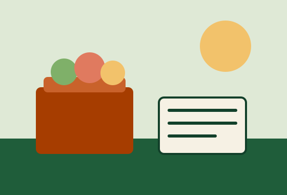

Larkfield Region Food Bank
Good food today. Stronger neighbors tomorrow.
We move millions of meals a year to pantries, mobile markets and kitchens across six counties, and we work on the reasons people go hungry in the first place.

Hunger exists in every ZIP code in our region
Roughly one in nine neighbors does not know where the next meal is coming from. Explore sample figures for each county in our region.
Explore hunger by countyNeighbors we feed through
We stock a network of local partners who know their blocks best.
Hearth & Table
Weekday meals and a pay-what-you-can cafe in Harbor City.
Common Pot Kitchen
Trains job seekers while cooking 4,000 meals a week.
Neighbors First Pantry
A choice-style pantry serving Millbrook families.
Gleaners’ Circle
Volunteers who rescue surplus produce from local farms.
Bread Basket Collective
Mutual aid groceries for Eastfield renters.
Neighbors, in their own words
Illustrative stories about fictional people, written for this demo site.
Imani
A night-shift nurse who stretches a budget with weekend market boxes.
Rosa
A retired teacher who picks up a senior box and stays for the bingo.
Daniel
A college student who found a campus pantry between classes.
Priya
A parent of three who learned to cook with pantry staples.
How we’re helping people in need
Providing good food to help today
Fresh produce, protein and pantry staples go out every weekday through partner pantries, ready-to-eat meal sites and senior box pickups.
Find food assistanceDistributing food where it’s needed most
Mobile markets park in neighborhoods with few grocery stores, so a bus ride is not the price of a healthy dinner.
See our distribution programsCreating hunger solutions for tomorrow
Nutrition & Wellness
Cooking classes and produce prescriptions with local clinics.
Farms & Gardening
Community plots and farm partnerships that grow food closer to home.
Food+ Partnerships
Pairing food with housing, health and job support at partner sites.
Ready to pitch in?
Every gift, hour and shared post helps a neighbor eat tonight.
Upcoming events
- Fundraiser
Builders Feed Neighbors Lunch
- Conference
Campus Hunger Summit